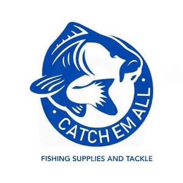

Trade Mark Journal No.2025/024 13 June 2025
UK00004211378 30 May 2025 (25,28)

- Class 25
- Fishing waders; Fishing jackets; Fishing footwear; Fishing clothing; Fishing shirts; Fishing boots; Fishing headwear; Waterproof boots for fishing; Rubber fishing boots; Clothing for fishermen.
- Class 28
- Lures for hunting or fishing; Lures for fishing; Fishing lures; Fishing creels; Fishing sinkers; Rods for fishing; Fishing rods; Fishing reels; Reels for fishing; Fishing tippets; Fishing tackle; Tackle (Fishing -); Hunting and fishing equipment; Poles for fishing; Fishing poles; Hooks for fishing; Fishing hooks; Fishing gaffs; Fishing equipment; Fishing spinners; Decoys for hunting or fishing; Floats for fishing; Fishing floats; Fishing swivels; Fishing plugs; Bags for fishing; Fishing weights; Creels [fishing traps]; Scent lures for hunting or fishing; Lures (Scent -) for hunting or fishing; Landing nets for fishing; Lines for fishing; Fishing lines; Bait (Artificial fishing -); Fishing ground baits; Artificial fishing bait; Handheld fishing nets; Gut for fishing; Fish hook removers being fishing tackle; Fishing bait [synthetic]; Artificial baits for fishing; Lures [artificial] for fishing; Fishing harnesses; Fishing plumbs; Fishing leaders; Rod blanks (Fishing -); Fishing tackle floats; Fishing rod cases; Artificial chum for fishing; Fishing fly boxes; Fishing rod holders; Swivels [fishing tackle]; Fishing rod supports; Fishing rod rests; Fishing lure boxes; Fishing tackle bags; Fishing reel cases; Fishing rod shaped game controllers for fishing games; Fishing rod handles; Paternosters [fishing tackle]; Fishing tackle boxes; Fishing tackle terminal; Fishing line casts; Tungsten weights for fishing; Hunting lures; Lures for hunting; Artificial fishing worms; Fish lures; Bags adapted for fishing; Bite indicators [fishing tackle]; Ice fishing strike indicator; Bite sensors [fishing tackle]; Angling nets; Landing nets [for anglers]; Landing nets for anglers; Nets (Landing -) for anglers; Fishing tackle terminal tackle; Aquarium fish nets; Inflatable fishing float tubes; Nets for use by anglers; Artificial fish bait; Fish hooks; Hooks (Fish -).
Leanne Jones